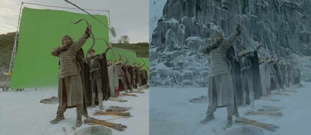
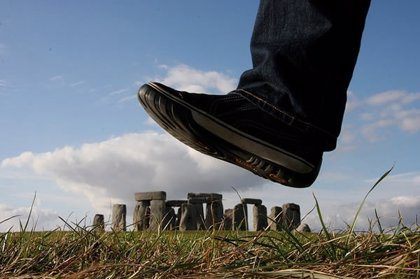
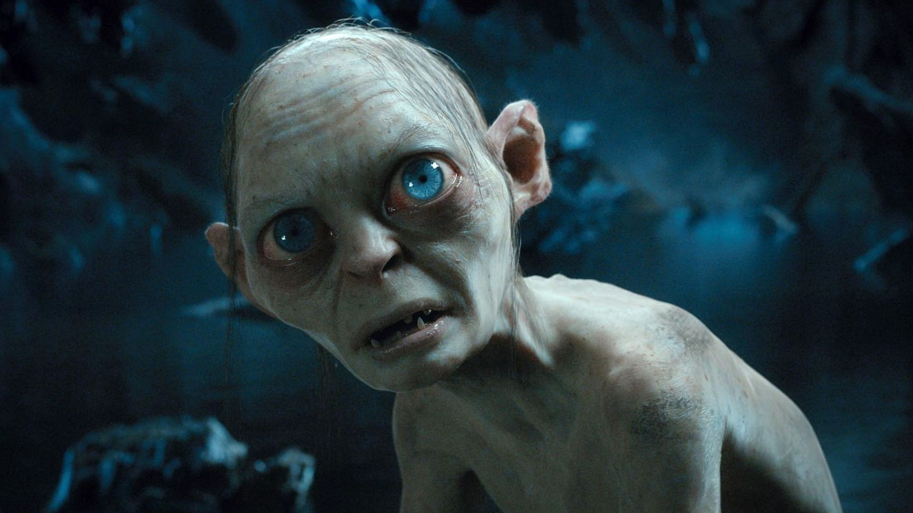

Efectos digitales
Para la trilogía se utilizaron innovadoras técnicas y efectos visuales digitales. La primera película cuenta con alrededor de 540 efectos, la segunda 799 y la tercera 1488 (2730 en total). El total se incrementa hasta 3420 en las versiones extendidas. 260 artistas de efectos visuales trabajaron en la trilogía, y el número se duplicó para Las dos torres.
El equipo técnico, encabezado por Jim Rygiel y Randy Cook, trabajó duro haciendo horas por las noches, obligado a producir efectos especiales en un corto espacio de tiempo por la imaginación hiperactiva de Jackson. Por ejemplo, varias de las secuencias principales de la Batalla del Abismo de Helm fueron generadas en las últimas seis semanas de postproducción de Las dos torres, y lo mismo volvió a ocurrir en las últimas seis semanas de El retorno del Rey.
Perspectiva forzada y miniaturas
La producción presentó complicaciones tras el uso de dobles a escala, al igual que con la perspectiva forzada a un nivel nunca antes visto en la industria del cine. Con esto, se utilizaron grandes y pequeños dobles a escala en ciertas escenas, mientras que se construyeron duplicados de algunos escenarios (incluyendo Bolsón Cerrado en Hobbiton) en dos escalas distintas, con el propósito de que los diferentes personajes se apropiaran a su respectivo tamaño.
Igualmente se empleó la perspectiva forzada para que se notara que los hobbits (cuyo tamaño es relativamente pequeño) estaban interactuando con los humanos y los elfos, que poseen una altura superior. Weta Digital acuñó el término «maxitura» para las 72 miniaturas producidas en la cinta, en referencia a su enorme tamaño. Dichas miniaturas albergan la escala 1:4 del Abismo de Helm. La mayoría de los sets se edificaron para dar lugar a la composición de modelos y pinturas mate.
Gollum y las criaturas por ordenador
Muchas de las criaturas de la Tierra Media, ya sean los trolls, los Balrogs, los ents, los huargos, los olifantes, así como Ella-Laraña, entre otros, fueron creados por computadora en su totalidad. Los creadores dedicarían meses a la creación y modificación de las criaturas, en el instante en el que los diseños de los bocetos fuesen previamente esculpidos en maquetas con cinco pies de sostén y escaneados a computadora. Era entonces cuando los animadores ajustarían los esqueletos y músculos de cada cuerpo sin animar y posteriormente los entintarían a partir de maquetas pintadas y previamente escaneadas.
La creación de Gollum fue la más controvertida y complicada de todas. La dificultad radicaba en el hecho de que había que crear un personaje digital que ofreciese al público una actuación dramática. Las maquetas de arcilla y lastilina se enviaron al equipo de Weta Digital, quienes crearon las imágenes finales de Gollum en el filme y trabajaron mano a mano con el actor Andy Serkis en la captura del movimiento del personaje, así como de sus gestos, dado que Peter Jackson quiso evitar a toda costa que el aspecto de Gollum fuese el de un personaje creado por ordenador. Por ello, era extremadamente importante que Gollum se basase en los movimientos y gestos de una persona real.